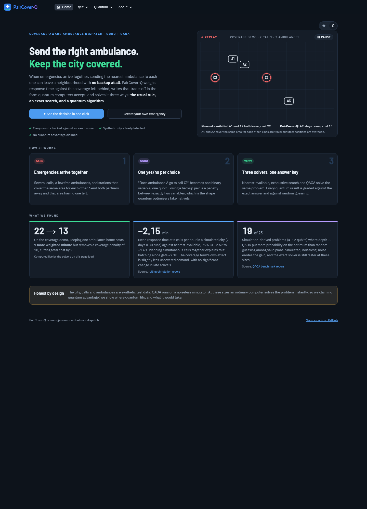
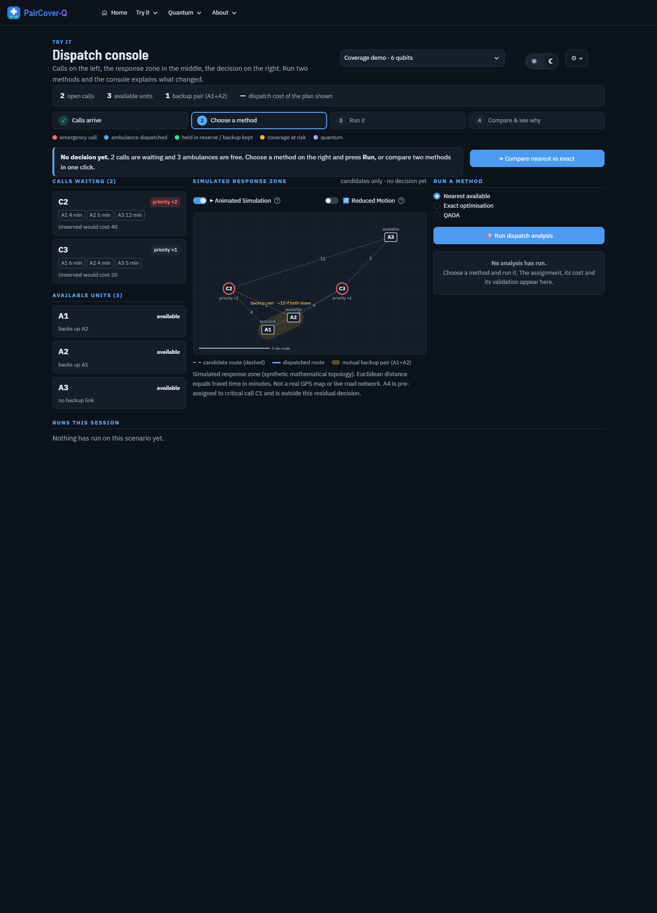
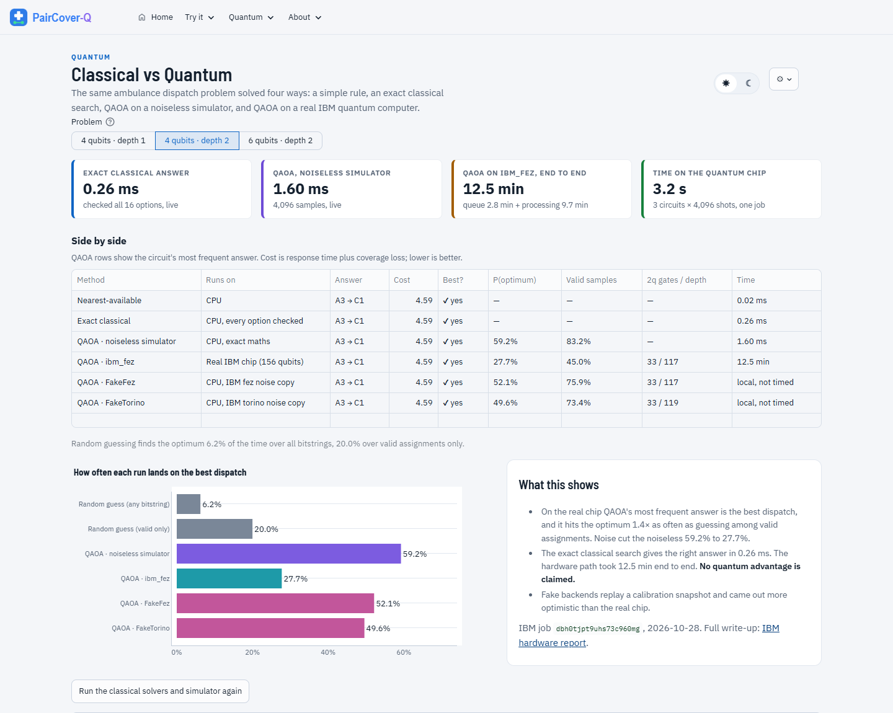
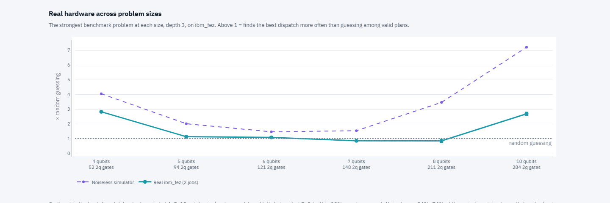
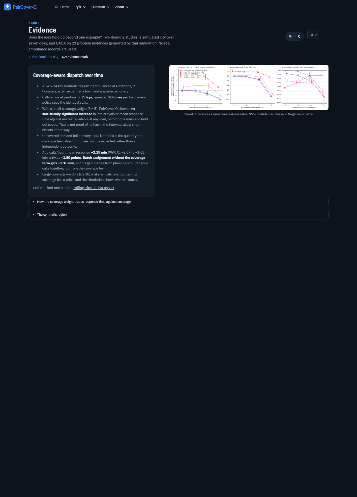

About 10 minutes. Updated 28 Oct 2026 with the real IBM hardware run. Blue boxes = what to say. Yellow boxes = what to click or show.

Good evening sir, we are Team Evric, and our project is PairCover-Q. It is about ambulance dispatch.
Normally the dispatcher sends the nearest free ambulance to each emergency. That works for one call. But when several calls come at the same time, sending the nearest ambulance to every call can leave a whole area with no backup.
In this animation, A1 and A2 cover the same area for each other. Nearest-available sends both of them, so that area is empty, and the cost is 22. Our method keeps A2 at home and sends A3 to the second call. One call waits one minute longer, but the area stays protected, and the cost is 13.
We turn this into a math problem. For every choice "does ambulance A go to call C", we make one yes/no variable. That is one qubit.
Our cost has three parts: priority-weighted response time, a penalty if a call is left unserved, and a pairwise penalty that switches on only when two backup partners both leave. That last term is a product of exactly two variables, so the whole problem is a QUBO, which is the form that quantum optimisers accept. We need no extra qubits for the coverage rule.
Then we solve the same problem three ways: the nearest-ambulance rule, an exact brute-force search, and QAOA in Qiskit, on a simulator and on a real IBM quantum computer. Every quantum answer is checked against the exact answer and against random guessing.

This is our dispatch console. On the left are the waiting calls and the available ambulances. In the middle is the response zone, where the dashed lines are travel minutes and the shaded pill is the backup pair A1 and A2.
I'll run nearest-available and then the exact optimiser, and the console explains what changed: the exact plan keeps A2 home and the cost falls from 22 to 13.


Our mentor asked us to show classical and quantum side by side, and to run on real hardware. This page does both, on one dispatch problem.
The first two rows are classical: the nearest-ambulance rule and an exact search over every option. They run live, in well under a millisecond. The third row is QAOA on a noiseless simulator, also live. The next row is the same circuit run on ibm_fez, a real 156-qubit IBM quantum processor, where we ran it six times on 28 October: three times raw and three times with error mitigation. The last row is IBM's noise copy of the same chip.
On this 4-qubit problem, in all six runs the answer the real chip gave most often is the best dispatch, A3 to call 1, the same as the exact solver. In our evening session it hit the best plan in 46 to 49 percent of shots. Random guessing among valid plans gets 20 percent, so the chip is about 2.4 times better than guessing, and keeps about 80 percent of the noiseless 59 percent.
We also learned that the hardware drifts: our very first run, two hours earlier, on the same qubits, got only 28 percent. That is why we repeated every run and show the range.
We tried error mitigation. Correcting readout errors added about one point, because readout on this chip is already very good, about 1 percent error. Dynamical decoupling and twirling did not help. So the remaining error is from two-qubit gates, and that tells us what to work on next.
Now the latency. The classical answer takes a fraction of a millisecond. A quantum job took between 12 and 20 minutes end to end, mostly waiting in the queue. The circuits themselves ran on the chip for only 3 to 5 seconds per job. All six jobs used 45 seconds of our free 10 minutes a month.
Now the 6-qubit problem. After mapping onto the chip the circuit has 82 two-qubit gates, and at that size the real chip finds the best plan between 5 and 10 percent of the time, around the 6.7 percent of guessing, and its most frequent answer is never the best plan. Notice also that here the nearest-ambulance rule picks a worse plan than the exact solver, because it ignores coverage. That is the point of our method.
Finally, scroll down to "Real hardware across problem sizes". Following our mentor's advice to build on the hardware results, we ran the strongest problem at each size from 4 to 10 qubits on the chip. The chip beats guessing at 4 qubits, 2.8 times, and still at 10 qubits, 2.7 times, with the best plan as its top answer, but falls below guessing at 7 and 8. Noise keeps between a quarter and three quarters of the noiseless gain, so the chip only stays ahead where the algorithm's gain is large. The limit is hardware noise, not the algorithm.

One example is not enough, so we ran a simulation: a synthetic 24 by 24 km city, 7 ambulances, calls arriving over 7 days, repeated 30 times at each load.
At 5 calls per hour, mean response time fell by 2.15 minutes compared with nearest-available. Most of this comes from planning simultaneous calls together: batching alone gives 2.18 minutes. The coverage term's own contribution is less uncovered demand, with no significant change in late arrivals.
For QAOA, we benchmarked 23 problems of 4 to 12 qubits. With a good starting strategy at depth 3, QAOA beat random guessing among valid plans on 19 of 23 problems in simulation. The hardware run you just saw shows how noise eats into that gain.
So we do not claim quantum advantage. A normal computer solves these in milliseconds. What we show is a complete quantum pipeline, from an emergency to a QUBO to a circuit on real IBM hardware and back to a dispatch decision, checked at every step against the exact answer.
We now know where the hardware stops helping for our encoding: between 4 and 6 qubits, and that the limit is two-qubit gate noise, not readout. Our next steps attack exactly that.
Screens not captured here: Quantum Lab, Create your own emergency and Method & data. Show them live if asked.